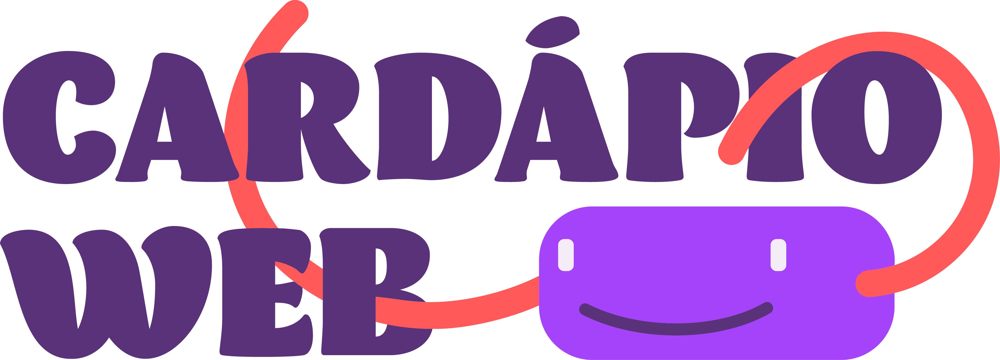

Vencedor só sai quando as quatro travas fecham — ciclo, SRM, origem e evidência.
O que estiver travado só muda com o teste parado — mexer em peso ou URL no ar reatribui quem já entrou e queima o resultado.
A primeira é o controle. Os pesos precisam somar 1.